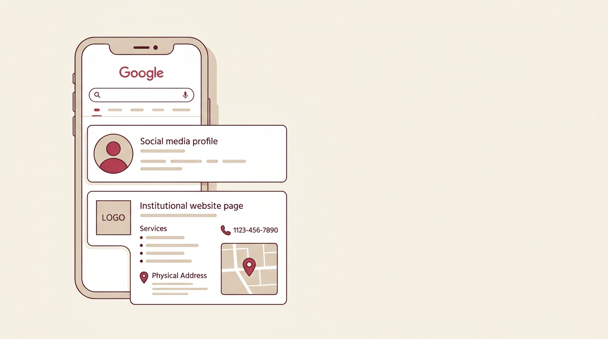
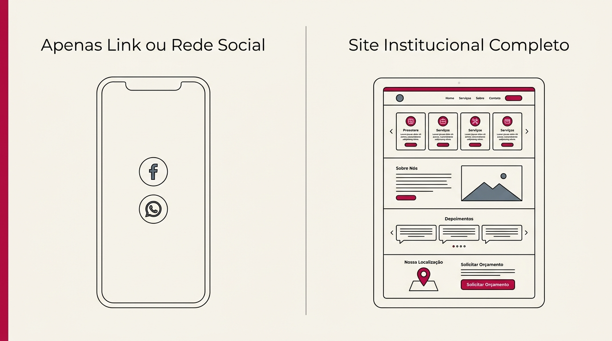

Criação de Sites em Volta Redonda: por que sua empresa perde clientes sem um site profissional
Sua empresa provavelmente já fecha negócio pelo WhatsApp e pelo Instagram. A questão é o que acontece antes disso — na hora em que o cliente ainda está decidindo se liga pra você ou pro concorrente.

O problema não é presença digital. É não ter onde o cliente pesquisa.
A maioria dos negócios em Volta Redonda já tem alguma coisa online: perfil no Instagram, número de WhatsApp, talvez até um cadastro no Google. O que quase ninguém tem é um lugar onde o cliente possa pesquisar antes de decidir. E essa etapa de pesquisa acontece mais do que parece.
Quando alguém pesquisa seu nome ou seu serviço no Google antes de te chamar, o que aparece — ou não aparece — já entrou na decisão dela. Se só existe um perfil de Instagram, ela não tem muito pra comparar você com quem também apareceu na busca.
O mesmo levantamento aponta que leads vindos de indicação — que costuma incluir alguém que "achou confiável" depois de pesquisar — convertem cerca de 30% a mais do que contatos frios vindos apenas de anúncios ou redes sociais.
Fonte: Pesquisa Opinion Box com Buscar ID (2.100+ entrevistados)Por que quem pesquisa mais costuma ser um cliente melhor
Não existe uma pesquisa dizendo exatamente "cliente que vê site confia mais". Mas dá pra sustentar o raciocínio de outro jeito: alguém disposto a pesquisar, comparar preço e ler sobre a empresa antes de ligar está decidindo de forma mais racional do que quem simplesmente chama o primeiro contato que aparece.
Pra você, isso costuma significar duas coisas. A conversa no WhatsApp fica mais curta, porque a pessoa já entendeu o que você faz antes de perguntar. E quem chega dessa forma tende a discutir menos o preço, porque já entendeu o motivo dele antes de perguntar quanto custa.
Ter uma página simples não é a mesma coisa que ter um site institucional
Uma dúvida que aparece bastante: "eu já tenho um link na bio ou uma página simples, isso não resolve?"
Resolve parte do problema. A diferença está na profundidade. Um site institucional tem página própria pra cada serviço, uma seção sobre a empresa, formas de contato, localização — e, quando bem construído, conteúdo que aparece no Google quando alguém pesquisa pelo problema que você resolve, não só pelo nome da sua empresa.
Isso muda o tipo de cliente que chega até você. Ao invés de depender só de quem já te conhece ou foi indicado, o site vira uma porta pra quem está procurando o serviço sem nunca ter ouvido falar da sua empresa.

O que costuma travar as pessoas na hora de decidir por um site
Redes sociais são boas pra engajamento, mas o alcance depende do algoritmo do dia. O site fica no ar independente disso — é um espaço que você controla.
O WhatsApp fecha negócio. O que ele não faz é a etapa anterior, a de pesquisa, que os dados acima mostram que já acontece, com ou sem sua empresa participando dela.
Dá pra fazer. O problema é que a maioria dessas plataformas gera uma presença visual, mas não uma estrutura pensada pra aparecer nas buscas do Google. Custa pouco e é achado por quase ninguém que ainda não sabia o nome da empresa.
O que entra no serviço de Site Institucional
O trabalho é criar sites com estrutura profissional, responsiva pra celular e otimizada pra SEO — com página dedicada pra cada serviço que a empresa oferece e um espaço de blog, pra aparecer em diferentes buscas relacionadas ao setor, não só quando alguém já procura pelo nome.
Estrutura técnica entregue no projeto:
URLs individuais com textos e títulos semânticos próprios para atrair buscas locais específicas.
Carregamento imediato no 4G, botões confortáveis de toque e sem layouts travados.
Marcação de dados LocalBusiness, geolocalização e integração com mapa da região.
Área editorial para publicar artigos e capturar pesquisas informativas do seu setor.
É pensado pra negócio que precisa de presença digital sólida e que cresce com o tempo. Não cobre loja virtual nem e-commerce — isso pede outra estrutura.
Pra quem isso faz sentido agora
Sua empresa já recebe cliente por indicação ou rede social, mas sente que perde negócio pra concorrente que parece mais preparado na hora da comparação. Também vale se seu serviço tem ticket mais alto, onde o cliente naturalmente pesquisa antes de fechar. Ou se você simplesmente quer parar de depender de indicação como única fonte.
Sua empresa vende exclusivamente por relacionamento direto ou balcão de rua, sem nenhuma necessidade de captar cliente por pesquisa online. Ou se o que você precisa, na verdade, é de uma loja virtual com checkout para vender produtos físicos — aí a estrutura é outra.
Perguntas frequentes
Não substitui. As redes geram relacionamento e alcance. O site é onde quem foi impactado por elas, ou te achou numa busca, se aprofunda antes de decidir.
Depende do que conta como resultado pra você. Credibilidade, o site já entrega desde o primeiro dia — qualquer pessoa que pesquisar seu nome vai encontrá-lo. Aparecer organicamente nas buscas do Google é mais lento, e varia com a concorrência do seu setor: normalmente de algumas semanas a alguns meses.
Não é obrigatório pro site funcionar como cartão de visita. Mas cada conteúdo novo aumenta a chance de aparecer em mais buscas — é um investimento que se acumula.
Serve, principalmente pra reforçar credibilidade e centralizar informação — endereço, horário, serviços, diferenciais — num lugar que o cliente confere antes ou durante a decisão de compra.